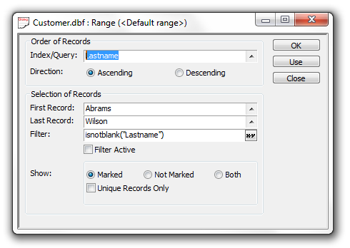

Applying a Range to a Table
To apply a range to a table while viewing a form or browse:
Select Records > Advanced > Apply Range... .
Select an index or query from the Index/Query list.
Select Ascending or Descending order.
Click
 to select the first record from the Index
Key Values dialog. Note, the dialog only shows the records selected
by the current filter.
to select the first record from the Index
Key Values dialog. Note, the dialog only shows the records selected
by the current filter.

Click
to select the last record from the Index
Key Values dialog.Optionally, add additional selection criteria in the Filter field. Optionally, click
 to use the
Expression Builder to help you define the expression.
to use the
Expression Builder to help you define the expression.Optionally, select whether you want to show Marked, Not Marked, or Both (all) records.
Optionally, check Unique Records Only to avoid showing duplicates.
Click Use to apply the range and update the form or browse.
Click OK to apply the range without updating the display.
Click Close to exit without applying the range.